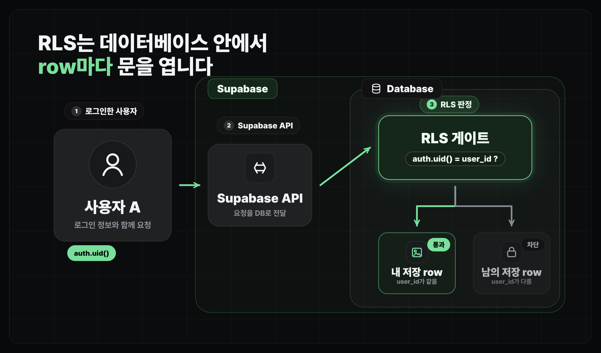

사용자 기능 개발하기
Supabase RLS 설정
데이터베이스에서 사용자별 접근 권한을 막는 방법
얻어갈 것
- Row Level Security(RLS)가 데이터베이스 레벨의 인가라는 점을 이해합니다.
- 새 사용자별 테이블을 만들 때 RLS 정책까지 함께 요청하는 기준을 남깁니다.
RLS가 필요한 이유
기존 서버 구조에서는 서버 코드 안에 "이 사용자가 이 데이터를 다뤄도 되는가"를 직접 코드로 작성하는 경우가 많습니다.
반면 Supabase는 데이터베이스를 바로 다룰 수 있는 API를 제공하므로, 인가 규칙은 Row Level Security(RLS)로 데이터베이스에 적습니다.
- RLS는 row마다 읽기·쓰기 가능 여부를 판단하는 인가 장치입니다.
- 인증(Authentication)이 "이 사용자가 누구인가"를 확인했다면, RLS는 그 사용자가 "이 row를 다뤄도 되는가"를 확인합니다.
- Supabase에서는 인증된 사용자의 id를
auth.uid()로 확인할 수 있습니다. - 사용자별 데이터에서는 보통
user_id = auth.uid()가 기본 규칙이 됩니다.

이런 인증/인가 설정을 잘못해서 보안 사고로 이어지는 경우가 정말 많습니다. 뒤에서 보안 체크리스트로 다시 확인해볼 예정입니다.
기본 정책
- 사용자별 데이터가 들어가는 테이블은 RLS를 켜고, 필요한 동작별 정책을 같이 만듭니다.
SELECT,INSERT,UPDATE,DELETE는 각각 어떤 row를 읽고 만들고 수정하고 삭제할 수 있는지 따로 정합니다.bookmarks,profiles,reports처럼 사용자 id와 연결되는 테이블은 특히 먼저 확인합니다.
-- 예시: 본인 북마크만 조회할 수 있게 하는 RLS 정책
create policy "read own bookmarks"
on user_bookmarks
for select
using (auth.uid() = user_id);
CLAUDE.md에 남길 규칙
새로운 테이블을 만들 때 Claude Code가 스키마만 만들고 RLS를 빼먹기 쉽습니다.
특히 저장 목록, 프로필, 신고 내역처럼 사용자별 데이터가 들어가는 테이블은 스키마와 인가 규칙을 한 세트로 봐야 합니다.
P1CLAUDE.md에 RLS 규칙 남기기
CLAUDE.md에 Supabase RLS 규칙을 추가해줘. - 사용자별 데이터 테이블은 RLS를 기본으로 켠다. - user_id가 있으면 auth.uid() = user_id 기준으로 본인 row만 허용한다. - 새 테이블을 만들 때 필요한 SELECT/INSERT/UPDATE/DELETE policy를 함께 설계한다. - UPDATE는 보통 USING과 WITH CHECK를 함께 검토한다. - migration에 RLS enabled와 policy SQL이 같이 들어갔는지 확인한다.